長期トレンド
JKMとJEPXシステムプライスの推移グラフ
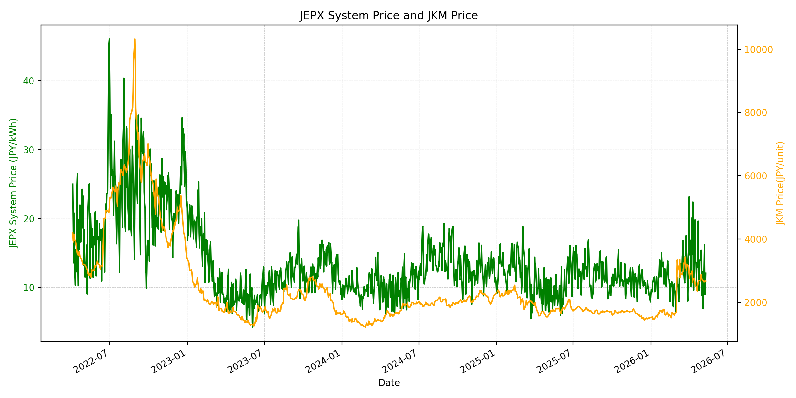
WTIの推移グラフ
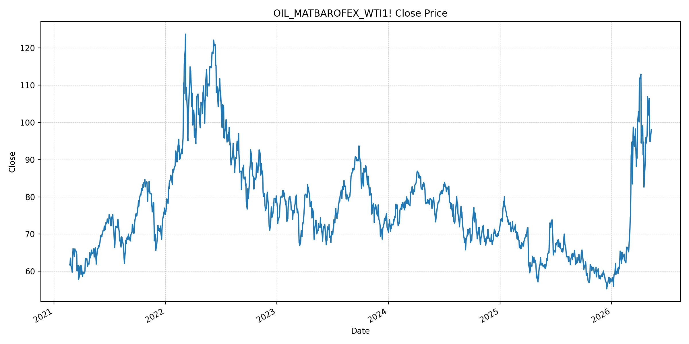
JEPXエリアプライスグラフ（直近一年分）
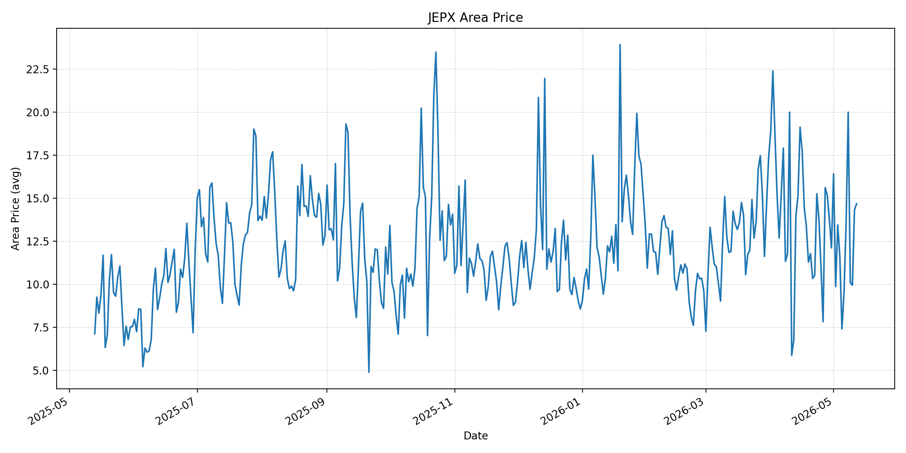
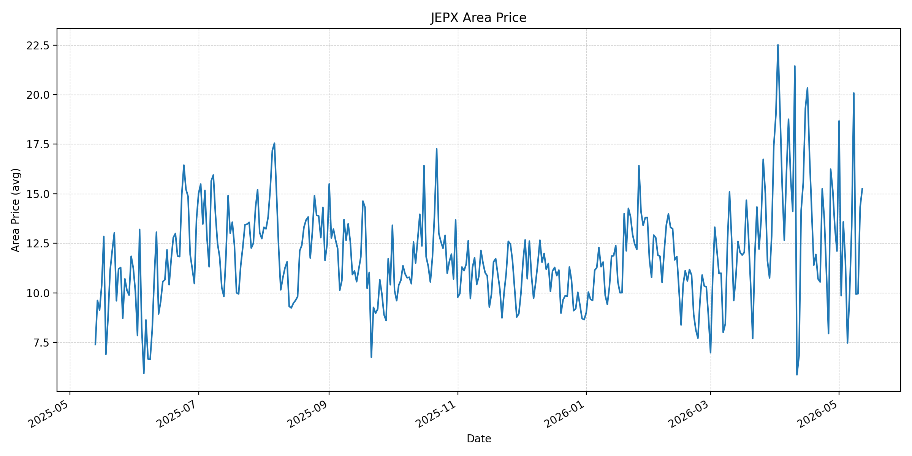
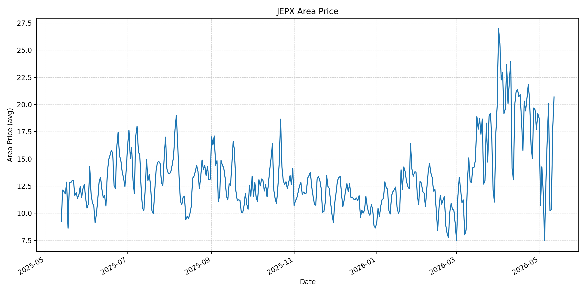
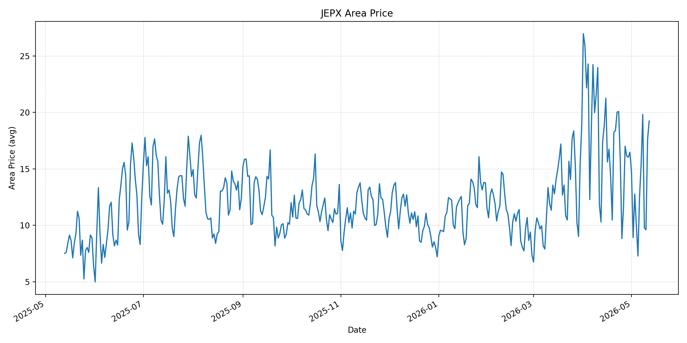
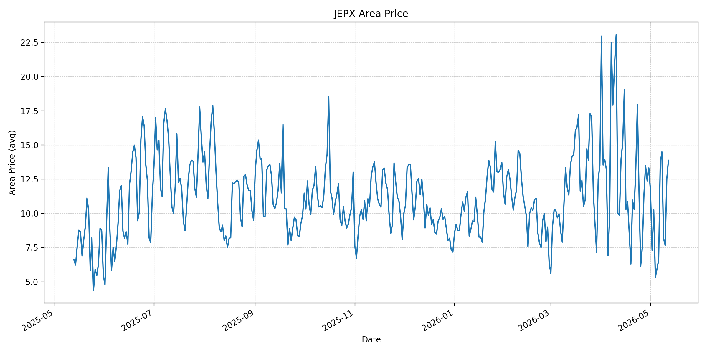
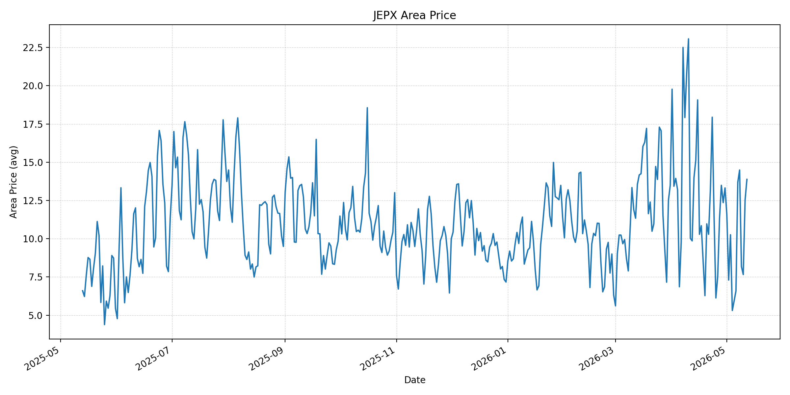
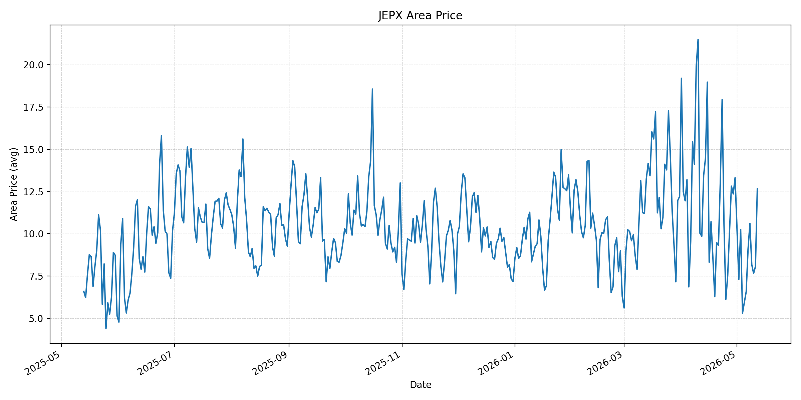
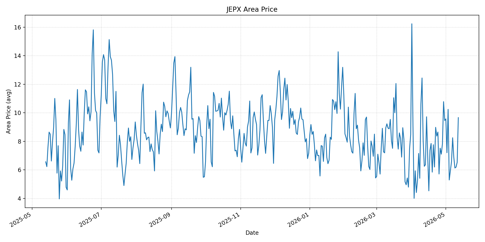
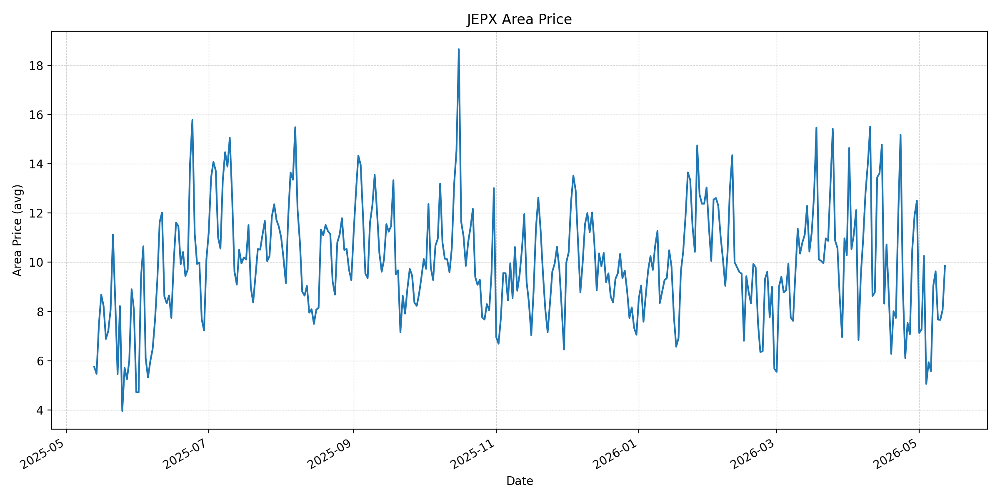
短期トレンド
JKMとJEPXシステムプライスの推移グラフ
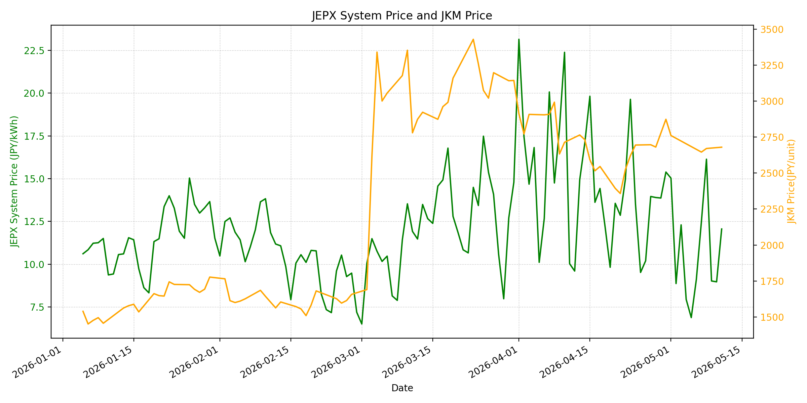
WTIの推移グラフ
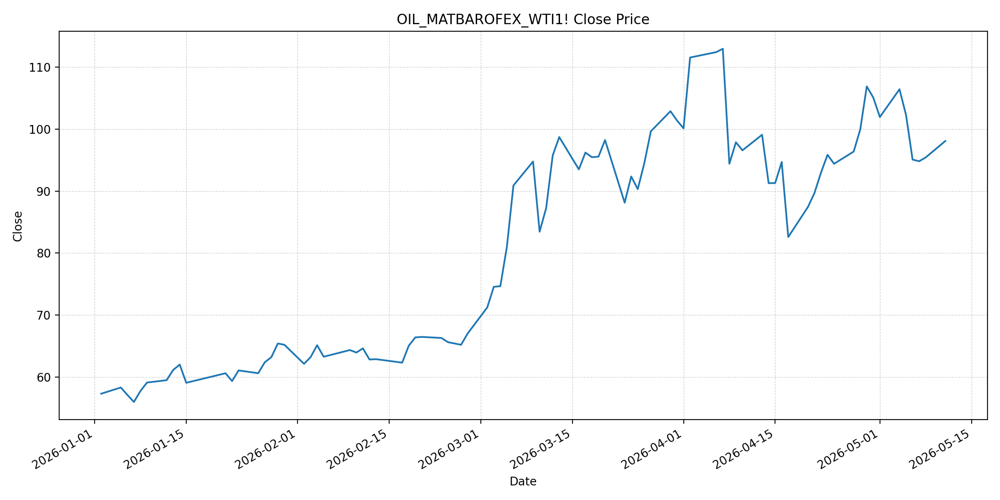
JEPXシステムプライス
JEPXは受渡日ベースの最新非空値で評価しています。最新値は 2026-05-12 分です。先週終値は 2026-05-05 時点の直近値、先月終値は 2026-04-30 時点の直近値で評価しています。
| エリア | 当日価格 | 前日価格 | 前日比（％） | 先週終値 | 先週比（％） | 先月終値 | 先月比（％） | 過去最高値 | 最高値比（％） |
|---|---|---|---|---|---|---|---|---|---|
| システム | 15.24 | 12.06 | 26.37 | 6.88 | 121.51 | 15.39 | -0.97 | 64.06 | -76.21 |
| 北海道 | 14.67 | 14.32 | 2.44 | 7.41 | 97.98 | 12.11 | 21.14 | 73.92 | -80.15 |
| 東北 | 15.25 | 14.33 | 6.42 | 7.47 | 104.15 | 12.11 | 25.93 | 84.92 | -82.04 |
| 東京 | 20.69 | 17.72 | 16.76 | 7.48 | 176.6 | 19.16 | 7.99 | 86.13 | -75.98 |
| 中部 | 19.24 | 17.63 | 9.13 | 7.28 | 164.29 | 16.47 | 16.82 | 52.06 | -63.04 |
| 北陸 | 13.88 | 12.52 | 10.86 | 5.94 | 133.67 | 13.32 | 4.2 | 46.48 | -70.14 |
| 関西 | 13.88 | 12.52 | 10.86 | 5.94 | 133.67 | 13.32 | 4.2 | 46.48 | -70.14 |
| 中国 | 12.67 | 8.07 | 57 | 5.94 | 113.3 | 13.32 | -4.88 | 46.48 | -72.74 |
| 四国 | 9.66 | 6.53 | 47.93 | 5.94 | 62.63 | 9.46 | 2.11 | 46.48 | -79.22 |
| 九州 | 9.85 | 8.07 | 22.06 | 5.94 | 65.82 | 12.5 | -21.2 | 40.54 | -75.7 |
LNG先物価格
最新値は 2026-05-11 の LNG(close) です。先週終値は 2026-05-01 時点の直近値、先月終値は 2026-04-30 時点の直近値で評価しています。
| 当日価格 | 前日価格 | 前日比（％） | 先週終値 | 先週比（％） | 先月終値 | 先月比（％） | 過去最高値 | 最高値比（％） |
|---|---|---|---|---|---|---|---|---|
| 2680 | 2671 | 0.34 | 2761 | -2.93 | 2874 | -6.75 | 10319 | -74.03 |
石油先物価格
最新値は 2026-05-11 の OIL(close) です。先週終値は 2026-05-04 時点の直近値、先月終値は 2026-04-30 時点の直近値で評価しています。
| 当日価格 | 前日価格 | 前日比（％） | 先週終値 | 先週比（％） | 先月終値 | 先月比（％） | 過去最高値 | 最高値比（％） |
|---|---|---|---|---|---|---|---|---|
| 98.07 | 95.42 | 2.78 | 106.42 | -7.85 | 105.07 | -6.66 | 123.7 | -20.72 |
ニュース
イラン情勢に関するニュース
- 2026年5月11日、APは、トランプ米大統領がイラン停戦を「生命維持装置上」と表現し、イランの最新提案を拒否したと報じました。イラン側提案には核問題の一部譲歩が含まれたとされますが、ホルムズ海峡の主権承認、制裁解除、戦後賠償などを求めており、外交停滞が続いています。 参照: AP, 2026-05-11
- 2026年5月11日、Guardianは、米国が提示した14項目案に対し、イランが制裁解除や米海上封鎖解除を重視する対案を出したものの、米国側が「受け入れ不能」と退けたと報じました。停戦は維持されていても、恒久合意に向けた条件差は大きいままです。 参照: Guardian, 2026-05-11
ホルムズ海峡経由の石油・LNGに関するニュース
- 2026年5月11日、Guardianは、イラン提案拒否を受けてBrent原油が一時 105.50 ドルまで上昇したと報じました。ホルムズ海峡は世界の石油・ガス供給の約5分の1が通る要衝であり、事実上の閉鎖が続くことで価格上振れ圧力が残っています。 参照: Guardian, 2026-05-11
- 2026年5月11日のAP報道では、イランがホルムズ海峡に対する支配を維持し、米国がイラン港湾を封鎖しているため、世界的なエネルギー危機が長期化する可能性が示されています。石油だけでなくLNG輸送の保険・待機・迂回コストも残りやすい状況です。 参照: AP, 2026-05-11
ホルムズ海峡経由でない石油・LNGに関するニュース
- 2026年5月11日、Saudi Aramcoのアミン・ナセルCEOは、ホルムズ混乱が数週間続けば石油市場の正常化が2027年までずれ込む可能性があると述べました。Aramcoは東西パイプラインなどで一部輸出を迂回していますが、供給ショックを完全に吸収するには不十分です。 参照: EnergyNow/Reuters, 2026-05-11
- 直近24時間で、非ホルムズ系LNGの新規大型供給増を示す主要報道は確認できませんでした。米国・豪州など非中東LNGの重要性は増していますが、足元では船腹、液化能力、長期契約条件の制約が残り、短期需給を大きく緩和する材料は限定的です。 参照: MarketWatch, 2026-05-11
日本国内のイラン戦争に関係するニュース
- 2026年5月11日、FNNは、参院決算委員会で高市首相がホルムズ海峡の船舶通過に向け「あらゆる外交努力と調整を続ける」と述べたと報じました。日本政府は、エネルギー供給不安を外交・調達両面で抑える姿勢を維持しています。 参照: FNN, 2026-05-11
- 2026年5月11日、読売新聞オンラインは、高市首相が原油・石油製品について「日本全体として必要となる量は確保できている」と答弁し、現時点で国民に追加的な節約を求める段階ではないと述べたと報じました。国内では供給不安を抑えつつ、価格上振れには警戒する局面です。 参照: 読売新聞オンライン/livedoor News, 2026-05-11
インサイト
ニュース事項による日本の電力市場への影響（短期：数日〜1週間）
- JEPXシステムプライスは 15.24 円/kWhで前日比 26.37%、先週比 121.51% と上昇しました。東京 20.69、中部 19.24 が高く、足元の電力スポットは燃料価格の前週比低下だけでは抑えられていません。
- OILは 98.07 と前日比 2.78% 上昇しましたが、先週比では -7.85% です。LNGも 2680 と前日比 0.34% の小幅上昇ながら、先週比 -2.93%、先月比 -6.75% で、4月末の危機プレミアムからはまだ低い水準です。
- 短期では、米イラン交渉の不調とホルムズ閉鎖継続が燃料価格の反発材料になる一方、日本政府が必要量確保を強調しているため、国内供給不安による急騰よりも、需給・地域差を伴う高めの変動が続く可能性が高いです。
ニュース事項による日本の電力市場への影響（長期：1ヶ月〜半年）
- 原油は先月比 -6.66%、LNGは先月比 -6.75% で、4月末に比べれば燃料費の上振れ圧力は緩んでいます。ただし、APとGuardianが示す通り、停戦案をめぐる条件差は大きく、ホルムズ再開の時期は不透明です。
- Aramcoの警告は、非ホルムズ経路や備蓄放出があっても、市場正常化には時間がかかることを示しています。1ヶ月〜半年では、船舶滞留、保険料、在庫再構築、長期LNG契約の硬直性が、日本の燃料調達コストに遅れて反映されるリスクがあります。
- JEPXシステムは過去最高値比で -76.21% と危機ピークから遠いものの、前週比では大きく反発しています。価格低下局面でも、非ホルムズ調達、備蓄、燃料費ヘッジを維持し、相対契約や燃料費調整の上振れを織り込む判断が妥当です。